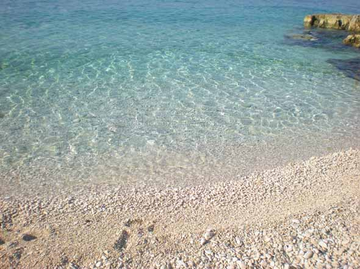
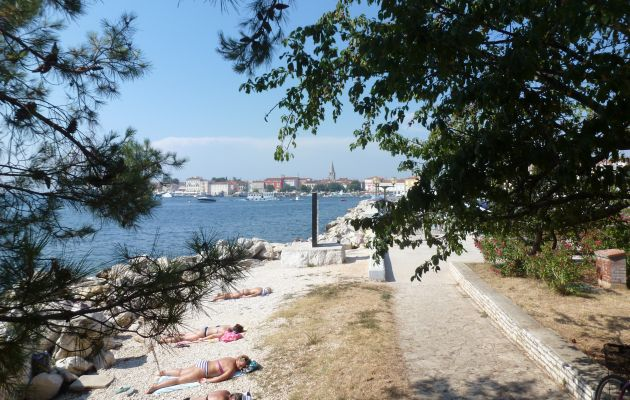
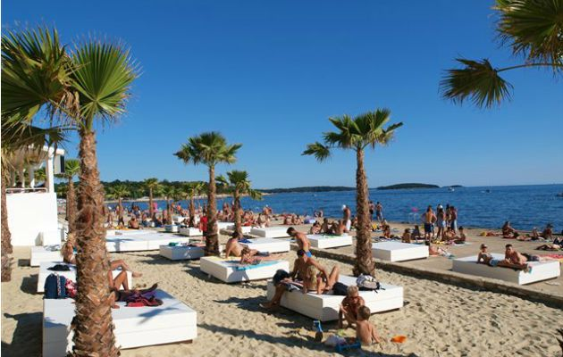

Stränder i Porec
År efter år, stränder i Porec tilldelats den blåa flaggan - internationella utmärkelse tack vare det klara vattnet och strändernas säkerhet.
Stranden Borik
Stranden Borik ligger på den norra sidan av Porec med utsikt över gamla stan.
I närheten av stranden Borik är tillgängliga tennisbanor, bordtennis, beachvolleyboll volleyboll och minigolf.
Stranden har lekplatser för barn samt strandbar och restauranger med ett varierat utbud av sallader, smörgåsar och rätter av kött och fisk.

Statsstranden
Statsstranden sträcker sig längs den södra kusten. Tack vare rik fritids innehåll och kulinariska service (bistroer och caféer) är stranden en av de mest populära stränderna i Porec. Här kan du prova på olika idrottsaktiviteter i skuggan av tallar. För din säkerhet finns badvakter under större del av dagen.

Stranden "Zelena laguna"
"Zelena laguna" ligger i en avskild vik okuženoj grönska bara 5 km från centrum av Porec. Stranden är delvis asfalterad, delvis stenig, med ett avskilt utrymme för naturister. Det finns möjlighet att hyra stolar och parasoll, och det finns duschar. Det finns möjlighet att spela volleyboll, tennis, bordtennis eller minigolf. Det rika utbudet av närliggande restauranger kommer att fullborda din semester njutning.

ALL RIGHTS RESERVED © WWW.POREC.NU 2013